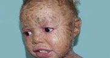
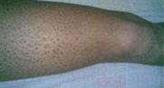

一、定义
鱼鳞病是一种由角质细胞分化和表皮屏障功能异常的皮肤疾病。在临床上以全身皮肤鳞屑为特点。鱼鳞病根据发病原因分为获得性鱼鳞病及遗传性鱼鳞病，其中以遗传性鱼鳞病较为常见，其遗传模式多样，包括常染色体显性遗传、常染色体隐性遗传和X染色体-连锁遗传方式。
- 
- 
二、原因和诱因
鱼鳞病的病因可归纳为几大因素：
一.遗传
二.精神神经
三.化学
四.内分泌
五.感染因素
六.外份因素


三、临床表现
1.遗传性疾病;
2.四型的皮损表现;
3.组织病理改变
（1）显性遗传性鱼鳞病：表皮中度角化过度，伴颗粒层变薄或消失；
（2）性联寻常型鱼鳞病：角化过度，颗粒层正常或稍厚；
（3）表皮松解角化过度鱼鳞病：角化过度，表皮细胞松解，颗粒变性。

四、诊断以及鉴别诊断
1、寻常型鱼鳞病
主要表现在四肢伸侧和躯干的燥性褐色菱形，或多角性鳞屑，上臂及大腿伸侧常有明显的毛囊角化性丘疹，掌趾受累，发病率很高，其角化性鳞屑是数层角质细胞不脱落堆积所致，多于出生后数月出现，5岁左右最重，青春期后症状可能减轻，但随着年龄的增大和治疗不当病情加重。
2、性连锁隐患性鱼鳞病
可于生后或婴儿发病，皮损鳞屑大而显著，呈黄褐色或污黑色大片鱼鳞状，皮肤干燥粗糙，往往遍布全身，腋窝，及肘窝等部位亦可受累；腹部，背部尤重，如面部受累，则仅限于耳前及颜面侧面，一般不发生毛囊角化，掌趾处皮肤正常，皮损不随年龄增长而减轻，有时反而增重。
3、红皮病
为具有高畸变率的常染色体显性遗传病，临床少见，生后或生后数月，可有泛发性及局面限性损害，泛发性者出生时全身即有铠甲样厚层鳞甲，生后即脱落，出现泛发性潮红及鳞屑，剥除鳞屑呈现润面，红斑可逐渐消失，可再发生较厚疣状鳞屑，局面限性者仅在四肢屈侧及皱壁部可有较厚的鱼鳞状角质片。
4，板层状鱼鳞病
系常染色体隐性遗传，生后全身即为一层广泛的人棉胶状的膜紧紧地包裹，多引起眼睑及唇外翻，数日后该膜脱落，皮肤呈广泛弥漫性潮红，上有灰白色或灰褐色多角形或菱形大片鳞屑，中央固着，边缘游离，往往对称性发于全身，以肢体屈侧，肘窝，腋窝和外阴等部较为明显，掌趾过度角化，指甲及毛发过度生长，病程经过迟缓，可终生存在，至成年期红皮症可减轻，但鳞屑仍存在。

五、预防
1、补充维生素A
鱼鳞病患者血清中维生素A的含量明显低于正常人。因此。补充维生素A,可有效缓解鱼鳞病的症状。鱼鳞病的保健应注意多吃富含维生素A的食物，如胡萝卜、奶油、白薯、鱼肝油、绿叶素及猪肝等。
2、注意皮肤护理
鱼鳞病患者皮肤干燥粗糙，尤其在冬季燥时，皮肤失水相对增加，皮损即加重。因此，鱼鳞病的保健还表现在冬季要特别做好皮肤的护理。
3、注意自身保暖
鱼鳞病患者应该尽量避免风寒刺激皮肤，增强身体的抵抗力，利于缓解病情和康复。这是属于鱼鳞病的保健措施之一。
4、洗澡不宜过勤
鱼鳞病的保健应不宜过多洗澡，肥皂少用，洗澡之后最好使用护肤油脂，可保护皮肤柔润，使鳞屑减少，并保持适当的水分和足够的营养成分，这是鱼鳞病的注意事项中最重要的一点。
4、鱼鳞病患者在平时饮食上也需要多多注意
患者不宜食用一些辛辣、刺激性强，生冷的食物，应该以清淡的食物为主。
常规治疗
1.目前大多数治疗方法，治疗目的都是只能缓解症状，增加角质层含水量和促进正常角化。
2.全身治疗，可试用维生素A,13-顺维甲酸，或氨甲蝶呤。
3.局部可用增加角质层含水量，去除过度角化的物质。
4.有感染可外用抗菌素软膏
5.中药治疗以去屑生新，荣肌润肤，改善血液微循环系统，强化皮肤新陈代谢，调节人体自生免疫机能为主。

特色疗法一一中医熏蒸气化分层渗透法
国丹中医熏蒸气化分层渗透法，将药蒸汽进入人体来治病，该疗法又叫汉方汽疗，是利用中药熏蒸机将汉方制剂煎煮产生的药蒸汽进入人体来治病，是一种历史悠久且疗效显著的内病外治疗法。也就是将某些有治疗作用的溶液加热，使之产生蒸汽，利用所蒸发之气体熏蒸病人的全身或某一局部，或用某些具有挥发性液体所熏发出的分子，来熏治和预防某些疾病的一种外治疗法。同时巧妙把药力和热力有机结合在一起，促进人体对药物的吸收和全身血液的循环，使肌肤，孔窍、腴穴通过经络、气血与内脏连接起来，达到全身治疗的效果。


中医熏蒸气化分层渗透法四大优势
快速定位、激活细胞
根据病因，快速定位，此法将中药物理作用于鱼鳞病病灶，可快速改善体内酶活性，达到平稳表皮和游离胆固醇的代谢的效果，激活皮脂腺和汗腺的正常分泌功能，从根源上解决鱼鳞病皮肤干燥问题。
活血化瘀、除毒润肤
鱼鳞病病在表皮，根在血液。体内存在血液基因病毒，在造血过程中产生一种“隐形血体蛋白”，与肌体代谢的有害产物活性氧相结合形成血毒，随血液循环全身，导致肝脏造血功能失调，从而产生皮肤粗糙干燥。
采用熏蒸渗透法可以快速增强红细胞变形能力，疏通微小血管，改善微循环，新鲜血液从微小血管渗出脉外转变成津液，濡润皮肤肌腠，加速新生细胞生长，阻断血体蛋白的变异，清除学毒素。
安全、无毒副作用
不比原始治疗方法，在治疗同时会对患者身体的其他方面带来一定的副作用损伤其他人体器官功能，此疗法不损害肝脏，对身体没有毒副作用，安全、可靠，患者更放心！
标本兼治、不发
从根源上解决鱼鳞病皮肤干燥问题，提高人体自身的免疫功能，恢复自然生理机能，避免反复发作，标本兼治、不复发，真正从根本解决了问题。

注意事项
该病如在没有治愈前结婚，对下一代很有可能会遗传，只有根治此病才能结婚，平时还要加强锻炼，对生活方面注意可多饮白开水，服用维生素A。针对遗传性鱼鳞病，会大大提高子代的遗传几率，可以结婚，但生育不宜！